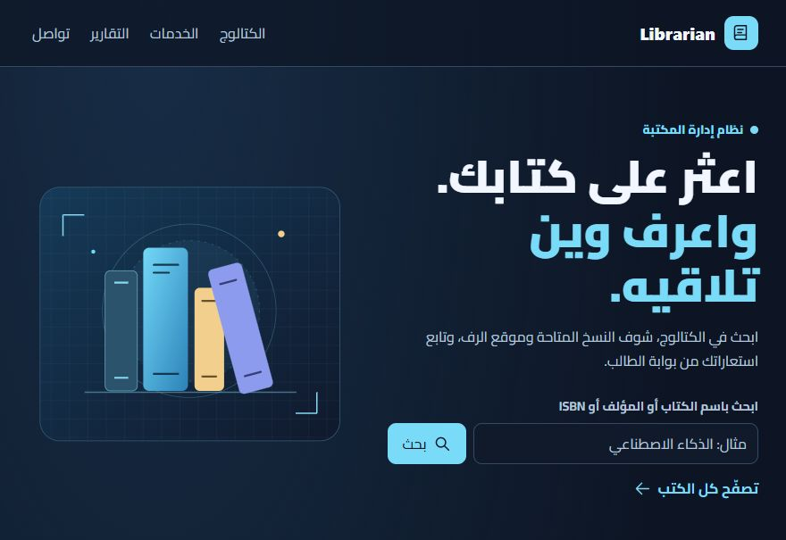
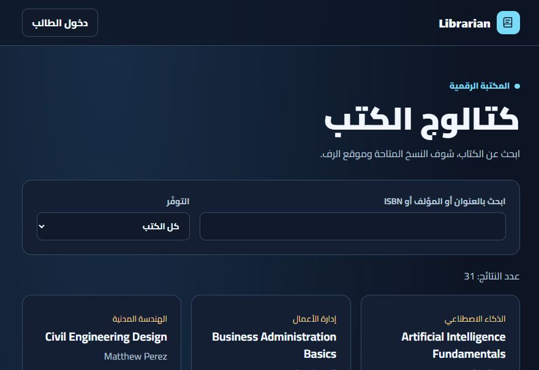

01
مسار الطالب
واجهة الطالب بتطلب البريد الجامعي، وفيها خيار إنشاء حساب وإعادة تعيين كلمة المرور.
04 / إدارة المكتبات
نظام مكتبة واحد بمسارين واضحين.
مشروع جامعي جماعي فيه مسار للطلاب ومسار لأمين المكتبة، مع أدوات لإدارة الكتب والأعضاء والاستعارة.
افتح Librarian افتح الكتالوج
الطالب بده يوصل لخدمات المكتبة، وأمين المكتبة بده أدوات لإدارة الفهرس والاستعارة. الواجهة الرئيسية لازم تبيّن لكل واحد من وين يدخل.
قدّمنا البحث بالكتالوج على الصفحة الرئيسية حتى يقدر أي زائر يلاقي كتاب ويشوف توفّره وموقع الرف. بوابتا الطالب وأمين المكتبة موجودتان بمسارين واضحين.
01
واجهة الطالب بتطلب البريد الجامعي، وفيها خيار إنشاء حساب وإعادة تعيين كلمة المرور.
02
لأمين المكتبة شاشة دخول منفصلة. المشروع بيعرض إدارة الفهرس والأعضاء والاستعارة والإرجاع والتقارير كمهام خاصة بالإدارة.
